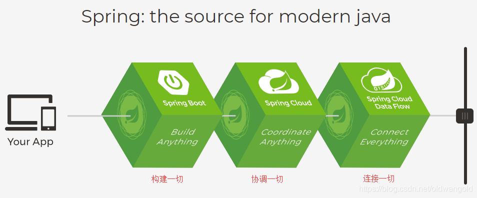
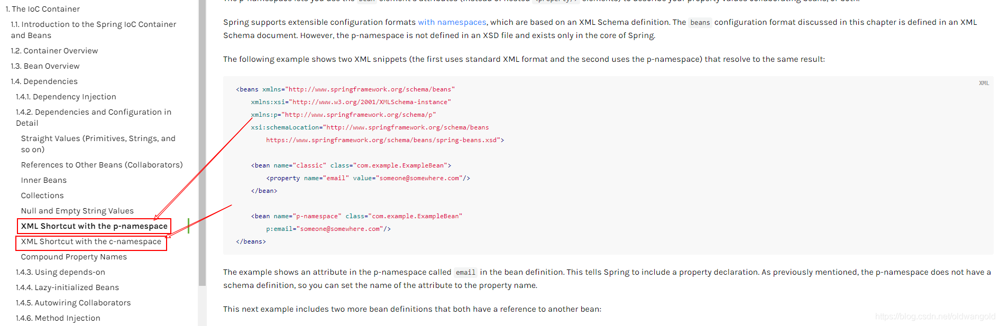
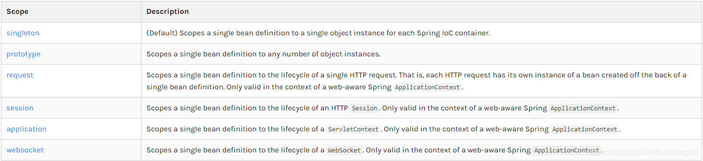
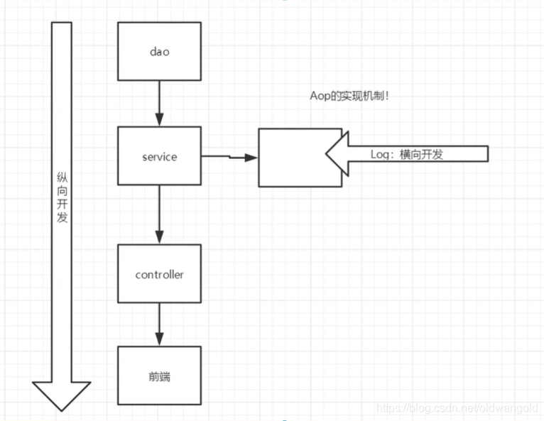

# Spring
# 简介
Spring 框架即以 interface21 框架为基础，经过重新设计，并不断丰富其内涵，于 2004 年 3 月 24 日，发布了 1.0 正式版。
Spring 理念：使现有的技术更加容易使用，本身是一个大杂烩，整合了现有的技术框架
官网：https://spring.io/projects/spring-framework
官方下载地址：https://repo.spring.io/release/org/springframework/spring/
GitHub：https://github.com/spring-projects/spring-framework
Maven：
<!-- https://mvnrepository.com/artifact/org.springframework/spring-webmvc --> | |
<dependency> | |
<groupId>org.springframework</groupId> | |
<artifactId>spring-webmvc</artifactId> | |
<version>5.2.0.RELEASE</version> | |
</dependency> | |
<!-- https://mvnrepository.com/artifact/org.springframework/spring-webmvc --> | |
<dependency> | |
<groupId>org.springframework</groupId> | |
<artifactId>spring-jdbc</artifactId> | |
<version>5.2.0.RELEASE</version> | |
</dependency> |
# 优点
Spring 是一个开源的免费的框架（容器）
Spring 是一个轻量级的、非入侵式的框架
控制反转（IOC），面向切面编程（AOP）
支持事务的处理，对框架整合的支持
总结：Spring 就是一个轻量级的控制反转（IOC）和面向切面编程（AOP）的框架。
# 组成
# 扩展
Spring 官网介绍：现代化的 Java 开发，说白了就是基于 Spring 的开发！

- Spring Boot：一个快速开发的脚手架，基于 SpringBoot 可以快速的开发单个微服务，约定大于配置
- Spring Cloud：是基于 SpringBoot 实现的
因为现在大多数公司都在使用 SpringBoot 进行快速开发，学习 SpringBoot 的前提，需要完全掌握 Spring 及 SpringMVC。
弊端：发展了太久之后，违背了原来的理念！配置十分繁琐，人称：“配置地狱！”
# IOC 理论推导
- UserDao 接口
public interface UserDao { | |
void getUser(); | |
} |
- UserDaoImpl 实现类
public class UserDaoImpl implements UserDao { | |
@Override | |
public void getUser() { | |
System.out.println("默认获取用户的数据"); | |
} | |
} |
- UserServicie 业务接口
public interface UserService { | |
void getUser(); | |
} |
- UserServiceImpl 业务实现类
public class UserServiceImpl implements UserService { | |
private UserDao userDao = new UserDaoOracleImpl(); | |
@Override | |
public void getUser() { | |
userDao.getUser(); | |
} | |
} |
在我们之前的业务中，用户的需求可能会影响我们原来的代码，我们需要根据用户的需求去修改原代码！如果程序代码量十分大，修改一次的成本十分昂贵！
我们使用一个 set 接口实现，已经发生了革命性的变化！
public class UserServiceImpl implements UserService { | |
private UserDao userDao; | |
// 利用 set 进行动态实现值的注入 | |
public void setUserDao(UserDao userDao) { | |
this.userDao = userDao; | |
} | |
@Override | |
public void getUser() { | |
userDao.getUser(); | |
} | |
} |
- 之前，程序是主动创建对象，控制权在程序员手上。
- 使用了 set 注入后，程序不再具有主动性，而是变成了被动的接受对象。
这种思想，从本质上解决了问题，程序员不用再去管理对象的创建了。系统的耦合性大大降低，可以更加专注的在业务的实现上！这是 IOC 的原型！
IOC 本质
控制反转（Inversion of Control），是一种思想，DI（依赖注入）是实现 IoC 的一种方法。控制反转是一种通过描述（XML 或注解）并通过第三方去成产或获取特定对象的方式。在 Spring 中实现控制反转的是 IoC 容器，其实现方法时依赖注入（Dependency Injection，DI）。
# HelloSpring
public class Hello { | |
private String str; | |
public String getStr() { | |
return str; | |
} | |
public void setStr(String str) { | |
this.str = str; | |
} | |
@Override | |
public String toString() { | |
return "Hello{" + | |
"str='" + str + '\'' + | |
'}'; | |
} | |
} |
<?xml version="1.0" encoding="UTF-8"?> | |
<beans xmlns="http://www.springframework.org/schema/beans" | |
xmlns:xsi="http://www.w3.org/2001/XMLSchema-instance" | |
xsi:schemaLocation="http://www.springframework.org/schema/beans | |
https://www.springframework.org/schema/beans/spring-beans.xsd"> | |
<!-- 使用 Spirng 来创建对象，在 Spring 中这些都称为 Bean | |
类型 变量名 = new 类型 (); | |
Hello hello = new Hello (); | |
id = 变量名 | |
class = new 的对象 | |
property 相当于给对象中的属性设置一个值！ | |
--> | |
<bean id="hello" class="com.kuang.pojo.Hello"> | |
<property name="str" value="Spring"/> | |
</bean> | |
</beans> |
public class MyTest { | |
public static void main(String[] args) { | |
// 获取 Spring 的上下文对象 | |
ApplicationContext context = new ClassPathXmlApplicationContext("beans.xml"); | |
// 我们的对象现在都在 Spring 中管理了，我们要使用，直接去里面取出来就可以了。 | |
Hello hello = (Hello) context.getBean("hello"); | |
System.out.println(hello.toString()); | |
} | |
} |
问题：
- Hello 对象由谁创建？--Hello 对象由 Spring 创建
- Hello 对象的属性怎么设置？--Hello 对象的属性是有 Spring 容器设置的
这个过程就叫控制反转；
控制：谁来控制对象的创建，传统应用程序的对象是由程序本身控制创建的，使用 Spring 后，对象是由 Spring 来创建的。
反转：程序本身不创建对象，而是变成被动的接收对象。
依赖注入：就是利用 set 方法来进行注入的。
IOC 是一种编程思想，由主动的编程变成被动的接收。
可以通过 newClassPathXmlApplicationContext 去浏览一下底层源码。
一句话：对象由 Spring 来创建、管理、装配！
# IOC 创建对象的方式
- 使用无参构造创建对象，默认！
- 假设我们要使用有参构造创建对象。
2.1 下标赋值
<!-- 第一种方式，下标赋值 --> | |
<bean id="user" class="com.kaung.pojo.User"> | |
<constructor-arg index="0" value="旺旺java"/> | |
</bean> |
2.2 类型
<!-- 第二种方式，通过类型创建。不建议使用，如果两个参数都是 String，就会出现问题 --> | |
<bean id="user" class="com.kaung.pojo.User"> | |
<constructor-arg type="java.lang.String" value="wangjie"/> | |
</bean> |
2.3 参数名
<!-- 第三种方式，直接通过参数名来设置 --> | |
<bean id="user" class="com.kaung.pojo.User"> | |
<constructor-arg name="name" value="旺旺"/> | |
</bean> |
总结：在配置文件加载的时候，容器中管理的对象就已经初始化了。
# Spring 配置
# 别名
<!-- 别名，如果添加了别名，我们也可以使用别名获取到这个对象 --> | |
<alias name="user" alias="userNew"/> |
# Bean 的配置
<!-- | |
id：bean 的唯一标识符，也就是相当于我们学的对象名 | |
class：bean 对象所对应的全限定名：包名 + 类型 | |
name：也是别名，而且 name 可以同时取多个别名 | |
--> | |
<bean id="userT" class="com.kaung.pojo.UserT" name="user2 u2,u3;u4"> | |
<property name="name" value="南部封闭"/> | |
</bean> |
# import
这个 import，一般用于团队开发使用，它可以将多个配置文件，导入合并为一个。
假设现在项目中有多个人开发，这三个人负责不同的类开发，不同的类需要注册在不同的 bean 中，我们可以利用 import 将所有人的 beans.xml 合并为一个总的！
applicationContext.xml
<import resource="beans.xml"/> | |
<import resource="beans2.xml"/> | |
<import resource="beans3.xml"/> |
使用过的时候，直接使用总的配置就可以了。
# 依赖注入
# 构造器注入
# Set 方式注入【重点】
- 依赖注入：Set 注入！
- 依赖：bean 对象的创建依赖于容器
- 注入：bean 对象中的所有属性，由容器来注入
【环境搭建】
- 复杂类型
public class Address { | |
private String addresss; | |
public String getAddresss() { | |
return addresss; | |
} | |
public void setAddresss(String addresss) { | |
this.addresss = addresss; | |
} | |
} |
- 真实测试对象
public class Student { | |
private String name; | |
private Address address; | |
private String[] books; | |
private List<String> hobbies; | |
private Map<String, String> card; | |
private Set<String> games; | |
private String wife; | |
private Properties info; | |
} |
- beans.xml
<?xml version="1.0" encoding="UTF-8"?> | |
<beans xmlns="http://www.springframework.org/schema/beans" | |
xmlns:xsi="http://www.w3.org/2001/XMLSchema-instance" | |
xsi:schemaLocation="http://www.springframework.org/schema/beans | |
https://www.springframework.org/schema/beans/spring-beans.xsd"> | |
<bean id="student" class="com.kuang.pojo.Student"> | |
<!-- 第一种，普通值注入，value --> | |
<property name="name" value="旺旺"/> | |
</bean> | |
</beans> |
- 测试类
public class MyTest { | |
public static void main(String[] args) { | |
ApplicationContext context = new ClassPathXmlApplicationContext("beans.xml"); | |
Student student = (Student) context.getBean("student"); | |
System.out.println(student.getName()); | |
} | |
} |
完善注入信息
<?xml version="1.0" encoding="UTF-8"?> | |
<beans xmlns="http://www.springframework.org/schema/beans" | |
xmlns:xsi="http://www.w3.org/2001/XMLSchema-instance" | |
xsi:schemaLocation="http://www.springframework.org/schema/beans | |
https://www.springframework.org/schema/beans/spring-beans.xsd"> | |
<bean id="address" class="com.kuang.pojo.Address"> | |
<property name="addresss" value="苏州"/> | |
</bean> | |
<bean id="student" class="com.kuang.pojo.Student"> | |
<!-- 第一种，普通值注入，value --> | |
<property name="name" value="旺旺"/> | |
<!-- 第二种，Bean 注入，ref --> | |
<property name="address" ref="address"/> | |
<!-- 数组 --> | |
<property name="books" > | |
<array> | |
<value>红楼梦</value> | |
<value>水浒传</value> | |
<value>西游记</value> | |
<value>三国演义</value> | |
</array> | |
</property> | |
<!--List--> | |
<property name="hobbies"> | |
<list> | |
<value>听歌</value> | |
<value>敲代码</value> | |
<value>看电影</value> | |
</list> | |
</property> | |
<!-- Map --> | |
<property name="card"> | |
<map> | |
<entry key="身份证" value="1111111111"/> | |
<entry key="银行卡" value="68907687898"/> | |
</map> | |
</property> | |
<!-- Set --> | |
<property name="games"> | |
<set> | |
<value>LOL</value> | |
<value>COC</value> | |
<value>BOB</value> | |
</set> | |
</property> | |
<!-- null --> | |
<property name="wife"> | |
<null/> | |
</property> | |
<!-- Properties --> | |
<property name="info"> | |
<props> | |
<prop key="driver">20190525</prop> | |
<prop key="url">男</prop> | |
<prop key="username">root</prop> | |
<prop key="password">123456</prop> | |
</props> | |
</property> | |
</bean> | |
</beans> |
# 扩展方式注入
我们可以使用 p 命名空间和 c 命名空间进行注入
官方解释：

使用：
<?xml version="1.0" encoding="UTF-8"?> | |
<beans xmlns="http://www.springframework.org/schema/beans" | |
xmlns:xsi="http://www.w3.org/2001/XMLSchema-instance" | |
xmlns:p="http://www.springframework.org/schema/p" | |
xmlns:c="http://www.springframework.org/schema/c" | |
xsi:schemaLocation="http://www.springframework.org/schema/beans | |
https://www.springframework.org/schema/beans/spring-beans.xsd"> | |
<!-- p 命名空面注入，可以直接注入属性的值：property--> | |
<bean id="user" class="com.kuang.pojo.User" p:name="旺旺" p:age="18"/> | |
<!-- c 命名空间，通过构造器注入：construct-args --> | |
<bean id="user2" class="com.kuang.pojo.User" c:age="18" c:name="wonjack"/> | |
</beans> |
测试：
@Test | |
public void test2() { | |
ApplicationContext context = new ClassPathXmlApplicationContext("userbeans.xml"); | |
User user = context.getBean("user2", User.class); | |
System.out.println(user); | |
} |
注意点：p 命名和 c 命名空间不能直接使用，需要导入 xml 约束。
xmlns:p="http://www.springframework.org/schema/p" | |
xmlns:c="http://www.springframework.org/schema/c" |
# bean 的作用域

- 单例模式（Spring 默认机制）
<bean id="user2" class="com.kuang.pojo.User" c:age="18" c:name="wonjack" scope="singleton"/> |
- 原型模式：每次从容器中 get 的时候，都会产生一个新对象。
<bean id="user2" class="com.kuang.pojo.User" c:age="18" c:name="wonjack" scope="prototype"/> |
- 其余的：request、session、application 这些只能在 web 开发中使用到！
# Bean 的自动装配
- 自动装配是 Spring 满足 bean 依赖的一种方式！
- Spring 会在上下文中寻找，并自动给 bean 装配属性。
在 Spring 中有三种装配的方式：
- 在 xml 中显式的配置
- 在 Java 中显式配置
- 隐式的自动装配 bean【重要】
# ByName 自动装配
<!-- | |
byName：会自动在容器上下文中查找，和自己对象 set 方法后面的值对应的 beanid | |
--> | |
<bean id="people" class="com.kuang.pojo.People" autowire="byName"> | |
<property name="name" value="jack"/> | |
</bean> |
# ByType 自动装配
<!-- | |
byName：会自动在容器上下文中查找，和自己对象 set 方法后面的值对应的 beanid | |
byType：会自动在容器上下文中查找，和自己对象属性类型相同的 bean | |
--> | |
<bean id="people" class="com.kuang.pojo.People" autowire="byType"> | |
<property name="name" value="jack"/> | |
<!-- <property name="dog" ref="dog"/>--> | |
<!-- <property name="cat" ref="cat"/>--> | |
</bean> |
小结：
- ByName 时：需要保证所有 bean 的 id 唯一，并且这个 bean 需要和自动注入的属性的 set 方法的值一致！
- ByType 时：需要保证所有 bean 的 class 唯一，并且这个 bean 需要和自动注入的属性的类型一致。
# 使用注解实现自动装配
jdk1.5 支持注解，Spring2.5 就支持注解了。
The introduction of annotation-based configuration raised the question of whether this approach is “better” than XML.
要使用注解须知：
导入约束：context 约束
配置注解的支持
<?xml version="1.0" encoding="UTF-8"?><beans xmlns="http://www.springframework.org/schema/beans"xmlns:xsi="http://www.w3.org/2001/XMLSchema-instance"
xmlns:context="http://www.springframework.org/schema/context"
xsi:schemaLocation="http://www.springframework.org/schema/beans
https://www.springframework.org/schema/beans/spring-beans.xsd
http://www.springframework.org/schema/context
https://www.springframework.org/schema/context/spring-context.xsd">
<context:annotation-config/></beans>
@Autowired
直接在属性上使用即可，也可以在 set 方式上使用。
使用 Autowired 我们可以不用编写 Set 方法了，前提是这个自动装配的属性在 IOC（Spring）容器中存在，且符合名字 ByName。
注意：
@Nullable：字段标记了这个注解，说明这个字段可以为 null；
public @interface Autowired {
boolean required() default true;
}
测试代码：
// 如果显式定义了 Autowired 的 required 属性为 false，说明这个对象可以为 null，否则不允许为空。 | |
@Autowired(required = false) | |
private Cat cat; | |
@Autowired | |
private Dog dog; | |
private String name; |
如果 @Autowired 自动装配的环境比较复杂，自动装配无法通过一个注解【@Autowired】完成的时候，我们可以使用 @Qualifier (value="xxx") 去配合 @Autowired 的使用，去指定唯一的 bean 对象注入。
@Autowired | |
@Qualifier(value = "cat111") | |
private Cat cat; | |
@Autowired | |
@Qualifier(value = "dog222") | |
private Dog dog; | |
private String name; |
@Resource 注解
public class People { | |
@Resource(name = "cat1") | |
private Cat cat; | |
@Resource | |
private Dog dog; | |
private String name; | |
} |
小结：
@Resource 和 @Autowired 的区别：
- 都是用来自动装配的，都可以放在属性字段上
- @Autowired 通过 ByType 的方式实现，而且必须要求这个对象存在！【常用】
- @Resource 默认通过 ByName 的方式实现，如果找不到名字，则通过 ByType 实现。如果两个都找不到的情况下，就报错！【常用】
- 执行顺序不同：@Autowired 通过 ByType 的方式实现；@Resource 默认通过 ByName 的方式实现；
# 使用注解开发
在 Spring4 之后，要使用注解开发，必须保证 aop 的包导入了
使用注解需要导入 context 约束，增加注解的支持！
<?xml version="1.0" encoding="UTF-8"?> | |
<beans xmlns="http://www.springframework.org/schema/beans" | |
xmlns:xsi="http://www.w3.org/2001/XMLSchema-instance" | |
xmlns:context="http://www.springframework.org/schema/context" | |
xsi:schemaLocation="http://www.springframework.org/schema/beans | |
https://www.springframework.org/schema/beans/spring-beans.xsd | |
http://www.springframework.org/schema/context | |
https://www.springframework.org/schema/context/spring-context.xsd"> | |
<context:annotation-config/> | |
</beans> |
Bean
属性注入
// 等价于 <bean id="user" class="com.kuang.pojo.User"/>// @Component 组件@Componentpublic class User {
public String name;
// 相当于 <property name="name" value="qwqq"/>@Value("qwqq")
public void setName(String name) {
this.name = name;
}}衍生的注释
- @Component 有几个衍生注解，在 web 开发中，会按照 mvc 三层架构分层
- dao【@Repository】
- service 【@Service】
- controller 【@Controller】
- 这四个注解功能都是一样的，都是代表将某个类注册到 Spring 容器中，装配 Bean。
- @Component 有几个衍生注解，在 web 开发中，会按照 mvc 三层架构分层
自动装配
- @Autowired：自动装配通过类型、名字，如果 @Autowired 不能唯一自动装配上属性，则需要通过 @Qualifier (value="xxx")。
- @Nullable：字段标记了这个注解，说明这个字段可以为 null。
- @Resource：自动个装配通过名字，类型。
- @Autowired：自动装配通过类型、名字，如果 @Autowired 不能唯一自动装配上属性，则需要通过 @Qualifier (value="xxx")。
作用域
- @Scope ("singleton") 单例模式
- @Scope ("prototype") 原型模式
小结
xml 与注解：
- xml 更加万能，适合任何场合，维护简单方便
- 注解 不是自己类使用不了，维护相对复杂
xml 与注解最佳实践：
- xml 用来管理 bean；
- 注解只负责完成属性的注入
- 我们在使用的的过程中，只需要注意一个问题：必须让注解生效，就需要开启注解的支持。
<!-- 指定要扫描的包，这个包下的注解就会生效 --><context:component-scan base-package="com.kuang"/><context:annotation-config/>
# 使用 Java 的方式配置 Spring
我们现在要完全不使用 Spring 的 xml 配置了，全权交给 Java 来做！
JavaConfig 是 Spring 的一个子项目，在 Spring 4 之后，它就成为一个核心功能。
实体类:
// 这个注解的意思，就是说明这个类被 Spring 接管，注册到容器中 | |
@Component | |
public class User { | |
private String name; | |
public String getName() { | |
return name; | |
} | |
@Value("wonjack") // 属性注入值 | |
public void setName(String name) { | |
this.name = name; | |
} | |
@Override | |
public String toString() { | |
return "User{" + | |
"name='" + name + '\'' + | |
'}'; | |
} | |
} |
配置文件:
import org.springframework.context.annotation.Bean; | |
import org.springframework.context.annotation.ComponentScan; | |
import org.springframework.context.annotation.Configuration; | |
import org.springframework.context.annotation.Import; | |
// 这个也会被 Spring 容器托管，注册到容器中，因为它本来就是一个 @Component | |
// @Configuration 代表这是一个配置类，就和我们之前看的 beans.xml 一样 | |
@Configuration | |
@ComponentScan("com.kuang.pojo") | |
@Import(MyConfig2.class) | |
public class MyConfig { | |
// 注册一个 bean，就相当于我们之前写的一个 bean 标签， | |
// 这个方法的名字，就相当于 bean 标签的 id 属性 | |
// 这个方法的返回值，就相当于 bean 标签中的 class 属性 | |
@Bean | |
public User user() { | |
return new User(); // 就是返回要注入的 bean 的对象！ | |
} | |
} |
测试类:
public class MyTest { | |
public static void main(String[] args) { | |
// 如果完全使用了配置类方式去做，我们就只能通过 AnnotationConfig 上下文来获取容器 | |
// 通过配置类的 class 加载！ | |
ApplicationContext context = new AnnotationConfigApplicationContext(MyConfig.class); | |
User getUser = (User) context.getBean("user"); | |
System.out.println(getUser.getName()); | |
} |
这种纯 Java 的配置方式，在 SpringBoot 中随处可见！
# 代理模式
为什么要学习代理模式？因为这就是 SpringAOP 的底层！【SpringAOP 和 SpringMVC】
代理模式的分类：
- 静态代理
- 动态代理
# 静态代理
角色分析：
- 抽象角色：一般会使用接口或者抽象类来解决
- 真实角色：被代理的角色
- 代理角色：代理真实角色，代理真实角色后，我们一般会做一些附属操作
- 客户：访问代理对象的人
代码步骤：
- 接口
// 租房public interface Rent {
public void rent();
} - 真实角色
// 房东public class Host implements Rent{
public void rent() {
System.out.println("房东要出租房子");
}} - 代理角色
public class Proxy implements Rent{
private Host host;
public Proxy() {
}public Proxy(Host host) {
this.host = host;
}public void rent() {
seeHouse();
host.rent();
hetong();
fare();
}// 看房public void seeHouse() {
System.out.println("中介带你看房子");
}// 签合同public void hetong() {
System.out.println("签租赁合同");
}// 收中介费public void fare() {
System.out.println("收中介费");
}} - 客户端访问代理角色
public class Client {
public static void main(String[] args) {
// 房东要租房子Host host = new Host();
// 代理，中介帮房东租房子，但是，代理角色一般会有一些附属操作！Proxy proxy = new Proxy(host);
// 你不用面对房东，直接找中介租房即可！proxy.rent();
}}
代理模式的好处：
- 可以使真实角色的操作更加纯粹，不同区关注一些公共的业务
- 公共业务就交给代理角色，实现了业务的分工
- 公共业务发生扩展时候，方便集中管理
缺点：
- 一个真实角色就会产生一个代理角色；代码量会翻倍，开发效率会变低。

# 动态代理
动态代理和静态代理角色一样
动态代理的代理类是动态生成的，不是我们直接写好的。
动态代理分为两大类：基于接口的动态代理，基于类的动态代理
基于接口–JDK 动态代理【使用此种形式】
基于类–cglib
Java 字节码实现：javasist
需要了解两个类：Proxy：代理，InvocationHandler：调用处理程序
动态代理的好处：
- 可以使真实角色的操作更加纯粹，不同区关注一些公共的业务
- 公共业务就交给代理角色，实现了业务的分工
- 公共业务发生扩展时候，方便集中管理
- 一个动态代理类代理的是一个接口，一般就是对应的一类业务
- 一个动态代理类可以代理多个类，只要是实现了同一个接口即可